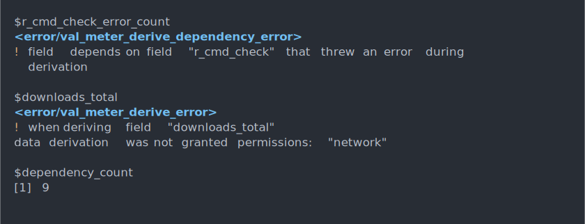
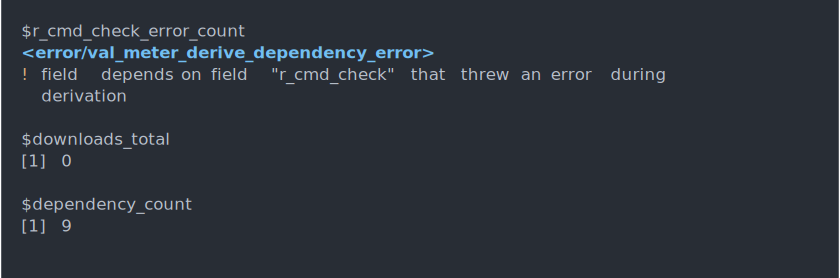

validation-ready package quantification supporting regulatory use of R
Installation
# install.packages("pak")
pak::pak("pharmaR/val.meter")Overview
Easily measure characteristics of packages, built to support the process of validation required in regulated industries, but generally useful to anyone who wants to survey packages.
rpkg <- random_pkg(permissions = TRUE)
metrics(rpkg)Features
Exploring metrics
val.meter makes it easy to find a listing of metrics and details of what those metrics represent.
metrics()
metrics actually represent a small set of the internally calculated package data, which may go through a few stages of calculation before resulting in a quantifiable metric. If you want to see all the internal information, you can explore the whole set of package data.
metrics are unique in that their data is required to be consistent and simple (atomic) data.
# see all implemented _data_ (a superset of metrics)
metrics(all = TRUE)
Creating package objects
To start evaluating metrics, start by create a pkg (package) object. Package objects represent a set of resources from which metadata is pulled and a collection of package metadata. When we pass a character path or package name, val.meter will search for the package from permitted sources.
# calculate some data, using default conservative permissions
pkg("val.meter")
We can also be declarative about exactly how we want to source our package metadata.
library(S7)
# initialize package with only our source code as a resource
resrc <- convert("../val.meter", source_code_resource)
pkg(resrc)
Calculating metrics
Once we have declared what we want to assess, we can then start calculating metrics.

In this case, you’ll notice that some metric calculations raised errors during execution. Here you’ll notice that we have not granted val.meter permission to execute code or fetch data from APIs over the network.
We can also access individual metrics by accessing our pkg object like a list.
p$dependency_count
Packages are lazy 💤! Since some metrics can be computationally intensive, we only calculate them as their needed. After they’re calculated the first time, the result is saved so you can access it whenever you need it.
Managing execution permissions
We can opt-in to more extensive capabilities by giving our package more permissive execution. We pass permissions(TRUE) to grant blanket permission to all capabilities.

And digging a bit deeper, we’ll see that r_cmd_check itself requires additional permissions to grant val.meter the ability to execute code on your machine.
p$r_cmd_check